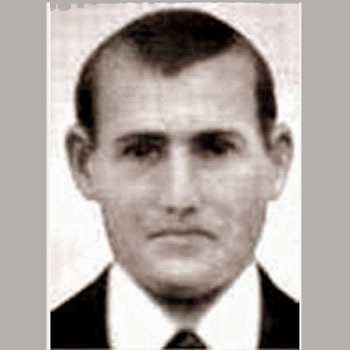

Isusovački blaženici
Brat
Bl. Vinko Sales Genovés
1881. – 1936.
Isusovački brat služio je u Gandíji i živio u zajednici starije subraće. Za Španjolskoga građanskog rata uhićen je i ubijen među jedanaestoricom isusovaca.
Tekst je preveden i prilagođen uz pomoć umjetne inteligencije.

Izvor slike
- Spomendan
- 2. rujna
- Zaštitništvo
- Nije navedeno u izvoru
- Životni vijek
- 1881. – 1936.
- Djelovanje
- Svakodnevni rad i skrovita služba · Progoni i progonstvo · Mučeništvo
- Razdoblje
- 19., 20. stoljeće
- Mjesto službe
- Gandía, Španjolska
- Datum rođenja
- 15.10.1881.
- Mjesto rođenja
- Valencia, Španjolska
- Datum smrti
- 29.09.1936.
- Mjesto smrti/mučeništva
- Valencia, Španjolska
- Okolnosti smrti/mučeništva
- Strijeljan s Pavlom Borijem nakon uhićenja tijekom Španjolskoga građanskog rata.
- Uloga
- Brat
- Mučenik
- Da
- Ostale oznake
- Djelovao u Gandíji; služio u zajednici starijih isusovaca
- Pripadnost
- Isusovac
- Drugi oblici imena
- Vicente Sales Genovés · Vicente
Životopis
Vinko Sales Genovés rođen je 1881. u Valenciji. U Družbu Isusovu ušao je 1915., u trideset četvrtoj godini. Služio je kao redovnički brat, a njegov je rad uključivao vratarsku službu u Gandíji. Posljednje je redovničke zavjete položio 1926. Njegov je doprinos zajednici bio u svakodnevnim poslovima brata, a u smrti je zazivao Krista Kralja.
Razdoblje u kojem je živio obilježilo je raspuštanje Družbe u Španjolskoj. Uredba iz siječnja 1932. ukinula je njezin pravni položaj, zahtijevala prestanak zajedničkoga redovničkog života i predvidjela državno preuzimanje imovine za obrazovne i dobrotvorne svrhe. Ta mjera objašnjava ranjiv položaj isusovačkih zajednica prije građanskoga rata. Ne treba je poistovjetiti s pojedinačnim nasilnim smrtima koje su uslijedile četiri godine poslije.
Sales je živio među starijim isusovcima kada je 1936. uhićen zajedno s ocem Pablom Borijem. Obojica su poginula 29. rujna. Njegovo mučeništvo pripada skupini jedanaestorice isusovaca stradalih u Valenciji i Gandíji na početku rata. U spomenu na tu skupinu uz svećenike se čuvaju i imena braće, među njima njegova vratarska služba i redovnički poziv.
Život i nasljeđe
Salesov ulazak u Družbu u tridesetim godinama pokazuje da je bratski poziv donio odluku nakon znatna iskustva odrasloga života. Redovničku je službu potom vezao uz Gandíju, bez poznata niza međunarodnih premještaja. Njegovo zatočenje s Pavlom Borijem povezuje brata i svećenika u istoj posljednjoj epizodi. Takva je veza konkretnija od općega svrstavanja među španjolske mučenike. Njegov se spomen čuva uz poštovanje skromna opsega potvrđenih osobnih podataka.
Tekst je preveden i prilagođen uz pomoć umjetne inteligencije.
Pročitaj više na izvornoj stranici ↗